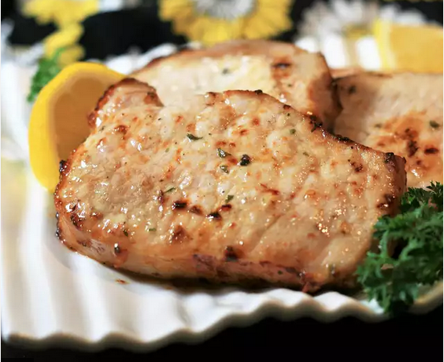

Air Fryer Ranch Porkchops

Porkchops marinated in ranch seasoning and cooked in an air fryer.
Ingredients:
- 4 boneless, center-cut pork chops, 1-inch thick
- cooking spray
- 2 teaspoons dry ranch salad dressing mix (such as Hidden Valley Ranch®)
- aluminum foil
Steps:
- Place pork chops on a plate and lightly spray both sides with cooking spray. Sprinkle both sides with ranch seasoning mix and let sit at room temperature for 10 minutes.
- Spray the basket of an air fryer with cooking spray and preheat the air fryer to 390 degrees F (200 degrees C).
- Place chops in the preheated air fryer, working in batches if necessary, to ensure fryer is not overcrowded.
- Cook for 5 minutes. Flip chops and cook 5 minutes more. Let rest on a foil-covered plate for 5 minutes before serving.